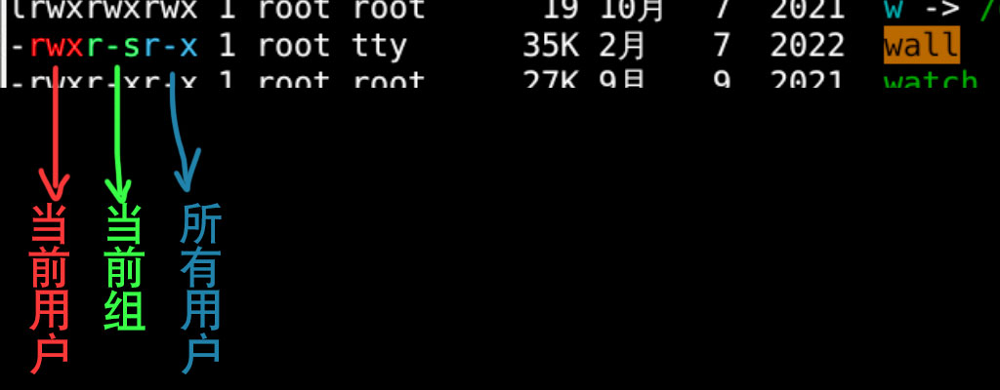
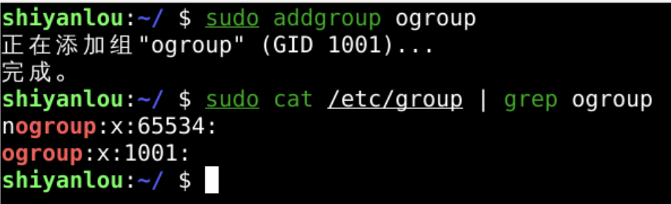
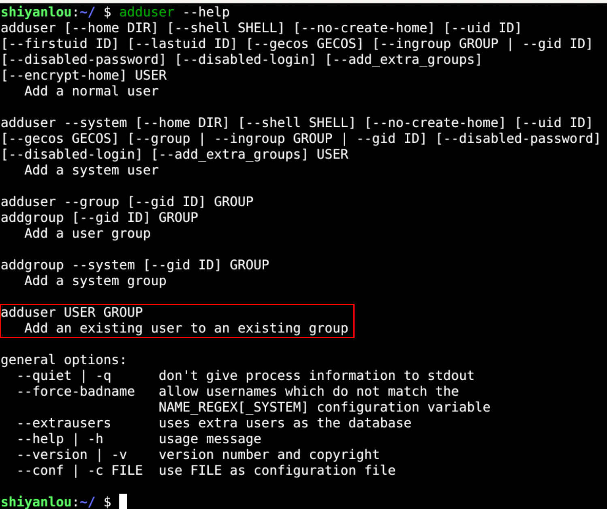
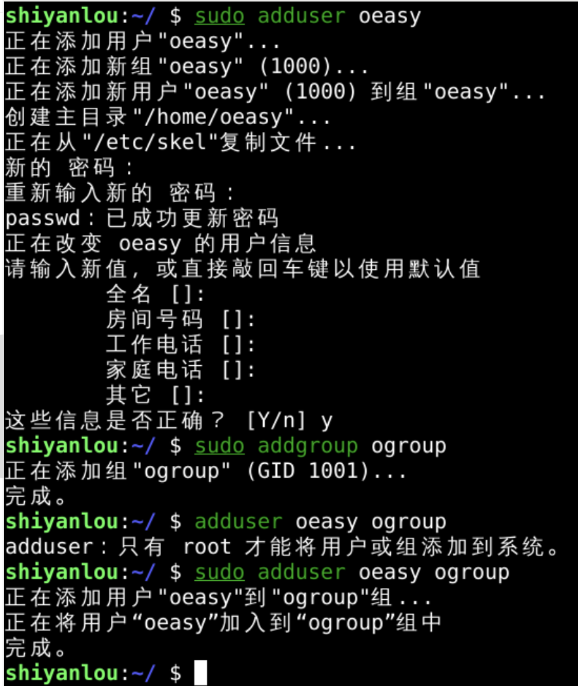
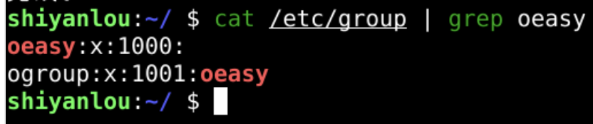
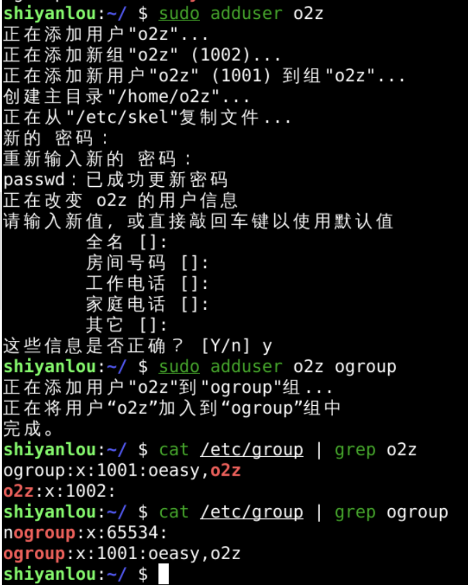
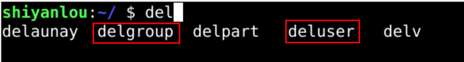

远程拷贝scp
回忆
- 上次研究了如何让用户可以以管理员身份运行程序
- 将用户加入sudo(27)这个组里面就可以
- 如何避免每次都要输入密码呢？
- 在/etc/sudoers.d里面添加用户名对应的文件
- 设置此用户不用输入密码就可以执行sudo命令

- 为什么sudo拥有超级管理员的权限呢？
- 因为sudo的权限是s
- 代表sudo会以root的权限运行
- 从视觉上看到是红色的
- 还有一些程序(wall)是黄色的

- 这是什么意思呢？
权限观察

- 什么是组呢？
- 我可以新建一个组吗？
新建组

- 和新建用户差不多
- 新建了组之后
- 可以把用户放进组里面吗？
查询手册

将用户加入新组

添加结果

- oeasy不但属于默认的oeasy组
- 还属于新的ogroup
- 再接再厉再来一个用户
添加o2z

- 目前ogroup里面两个用户了
- oeasy
- o2z
- 可以用wall给他们发信息吗？
- 先总结一下本单元
总结 🤨
- 我们这次新建了组(group)
- addgroup
- 有addgroup就有delgroup

- 可以将用户放到用户组中
- add oeasy ogroup
- 我们可以用wall
- 给oeasy、o2z发消息吗？🤔
- 下次再说！👋